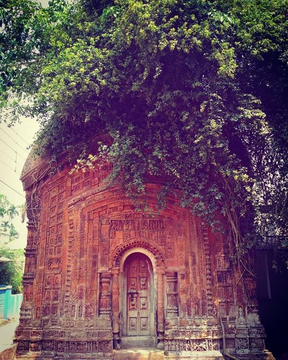
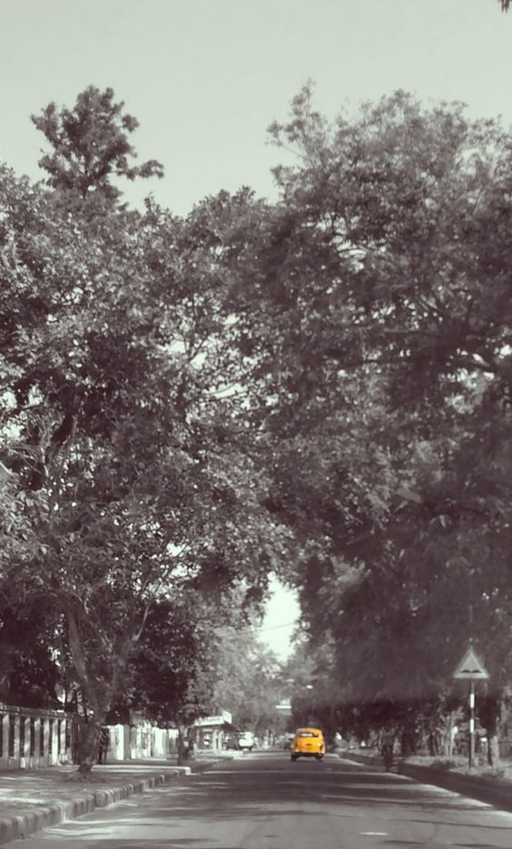

About North 24 Parganas
This district is known for the Sunderbans mangrove forest, home to the famous Royal Bengal tigers. The culture of the region is influenced by its close proximity to Kolkata and its agricultural economy.

